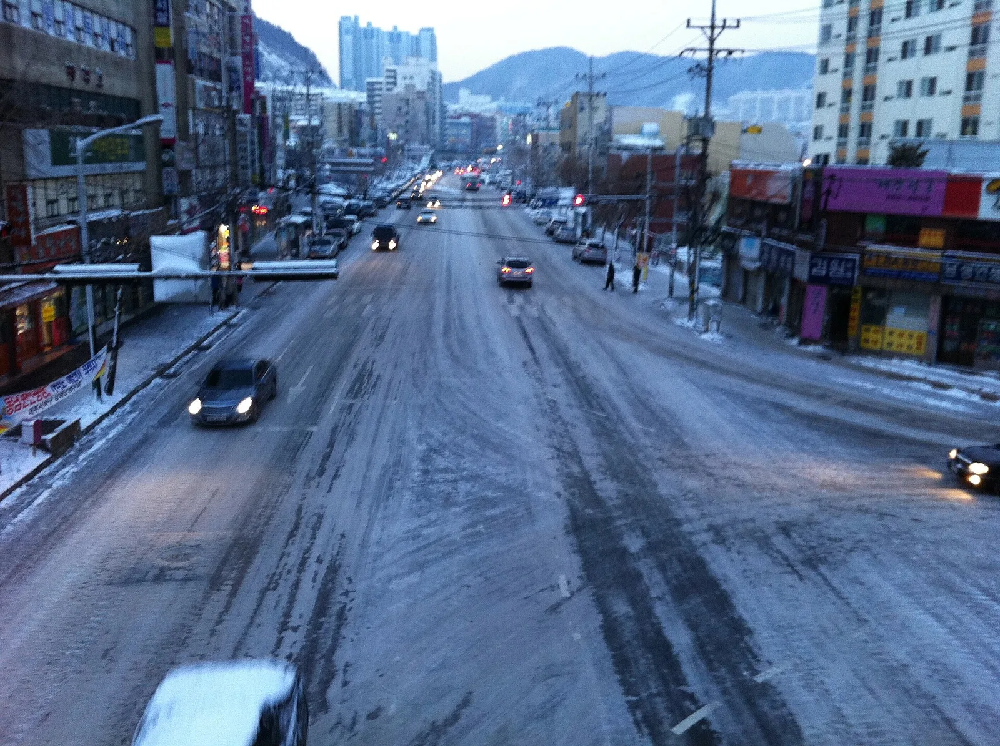

▲ 위성에서 본 한반도의 적설 분포. 북쪽 산간지역이 먼저 눈에 덮이고 남부로 갈수록 늦게 덮이는 패턴이 뚜렷하다
가을 단풍철이 되면 어김없이 등장하는 것이 '단풍 절정 시기' 지도다. 설악산에서 시작해 남쪽으로 내려오는 단풍 남하 속도는 이제 많은 사람에게 익숙한 개념이다. 그런데 겨울의 시작을 알리는 첫눈은 정반대 방향으로 움직인다. 단풍이 산 정상부에서 아래로 흘러내려온다면, 첫눈은 내륙 산간지대에서 먼저 내려 해안과 저지대, 남부지방 순으로 퍼진다. 흔히 '북고남저' 패턴이라 부르는 이 흐름을, 기상청이 공개하는 평년값과 최근 관측 사례를 통해 정리했다.
1. 왜 첫눈은 '북고남저'로 내리나
첫눈이 내리는 순서는 기본적으로 기온이 낮아지는 순서를 따른다. 한반도는 북쪽에서 내려오는 찬 공기의 영향을 먼저 받는 데다, 고도가 높을수록 기온이 낮기 때문에 강원 산간지역이 전국에서 가장 먼저 눈 소식을 맞는다. 대관령·설악산·태백산 같은 고지대는 늦가을 찬 공기가 유입되면 평지보다 훨씬 이른 시점에 눈발이 날린다.
반면 서울·경기를 포함한 수도권과 충청권은 산간지역보다 한 달 가까이 늦게 첫눈을 맞는 경우가 많고, 호남·영남 내륙과 제주도는 그보다도 더 늦다. 바다의 영향을 받는 남부 해안지역은 내륙보다 기온이 서서히 낮아지는 편이라 첫눈 시기도 늦춰지는 경향이 있다.
▲ 강원 산간지역은 전국에서 가장 이른 시기에 눈을 만날 수 있는 곳으로 꼽힌다 ⓒ Wikimedia Commons
2. 지역별 첫눈 시기 비교 — 북에서 남으로
기상청이 공개하는 기후평년값(1991~2020년 기준)과 각 지역 언론 보도를 종합하면, 대략 다음과 같은 순서로 첫눈이 남하한다. 다만 지점별 정확한 일자는 매년 기상 조건에 따라 크게 달라질 수 있어, 아래 표는 '대략적인 순서와 시기대'를 참고하는 용도로 봐야 한다.
| 순서 | 권역 | 대표 지역 | 평년 첫눈 시기대 |
|---|---|---|---|
| 1 | 강원 산간 | 대관령, 설악산, 태백 | 10월 말~11월 중순 |
| 2 | 수도권 | 서울, 인천, 경기 | 11월 중순~11월 말(서울 평년값 11월 20일 전후) |
| 3 | 충청권 | 대전, 청주, 세종 | 12월 초(대략 12월 2일~5일) |
| 4 | 호남·영남 내륙 | 광주, 대구, 전주 | 12월 초~중순(대구 평년값 12월 5일) |
| 5 | 남해안·제주 | 부산, 창원, 제주 | 12월 중순~말(창원 평년값 12월 27일) |
※ 위 시기대는 기상청 평년값과 언론에 소개된 관측 사례를 종합한 대략치이며, 지점·해에 따라 상당한 편차가 있다. 대구·창원처럼 지점별 평년값이 명확히 확인된 경우는 함께 표기했으나, 부산·제주·강원 산간 등 나머지 지점은 정확한 평년값이 이 조사에서 확인되지 않아 기간대로만 표기했다. 정확한 수치는 기상청 기상자료개방포털에서 지점별로 조회할 수 있다.
기상청 기후평년값 포털에서 확인 가능▲ 눈 덮인 서울 경복궁. 서울의 평년 첫눈 관측일은 11월 20일 전후로 알려져 있다 ⓒ KOCIS(대한민국 정책기자단)
3. 단풍 남하 vs 첫눈 북상 — 방향이 다른 두 계절 신호
가을철 자주 비교되는 두 현상이지만, 실제로는 움직이는 방향이 다르다. 단풍은 기온이 낮은 고산지대에서 시작해 낮은 지대로 남하한다. 설악산 정상부가 9월 말~10월 초에 물들기 시작해 10월 말~11월 초가 되면 지리산이나 내장산 같은 남부 저지대까지 단풍이 내려온다. 즉 '높은 곳→낮은 곳', '북쪽 산→남쪽 산'의 이동이다.
첫눈도 '북쪽에서 남쪽으로' 이동한다는 점은 같지만, 결정적인 차이는 산간과 평지의 순서다. 단풍은 특정 산 안에서도 정상부터 물들지만, 첫눈은 애초에 강원 산간지역 자체가 전국에서 가장 먼저 시작점이 되고, 그 다음이 내륙 평지, 마지막이 해안·남부 지역이다. 결과적으로 늦가을 강원 산간에서는 단풍과 첫눈을 거의 동시에 볼 수 있는 특이한 시기가 존재한다.

▲ 부산 등 남부 지역은 첫눈이 상대적으로 늦게 내리는 편이다 ⓒ Wikimedia Commons
4. 평년값과 실제 관측치는 다르다 — 해마다 편차 큰 이유
기상청이 발표하는 '평년값'은 최근 30년(현재 기준 1991~2020년) 관측 자료를 평균 낸 값이다. 즉 특정 연도의 예보가 아니라 장기간의 통계적 경향을 보여주는 지표다. 실제로 2024년 11월 27일 서울에는 근대적 기상관측(1907년 10월) 이래 11월 기준 가장 많은 눈(일최심적설 16.5cm)이 쌓인 사례가 있는데, 이는 평년보다 시기적으로도 늦고 적설량도 이례적으로 많았던 경우다.
이런 편차가 생기는 이유는 해마다 다른 대기 순환 패턴, 엘니뇨·라니냐 같은 해수면 온도 변화, 북극발 찬 공기의 남하 시점 등이 복합적으로 작용하기 때문이다. 따라서 이 기사에서 제시한 시기대는 '평균적인 경향'으로 참고하되, 그해의 실제 첫눈은 기상청 단기예보와 특보를 통해 확인하는 것이 정확하다.
5. 정리
체크포인트
- 첫눈은 강원 산간 → 수도권 → 충청권 → 호남·영남 내륙 → 남해안·제주 순으로 남하하는 '북고남저' 패턴을 보인다.
- 서울의 평년 첫눈 관측일은 11월 20일 전후(기상청 1991~2020년 평년값 기준)로 알려져 있다.
- 단풍은 산 정상에서 아래로 남하하고, 첫눈은 산간지역에서 평지·해안으로 퍼진다는 점에서 이동 방식이 다르다.
- 평년값은 30년 평균 통계이므로, 특정 해의 실제 첫눈은 이보다 훨씬 빠르거나 늦을 수 있다.
- 정확한 지점별 평년값과 실시간 예보는 기상청 기상자료개방포털과 날씨누리에서 확인할 수 있다.